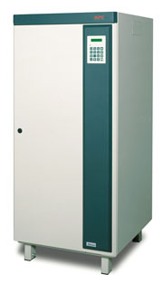
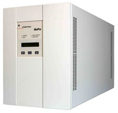
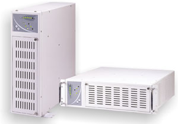
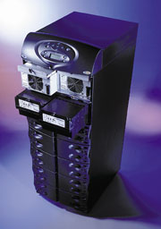
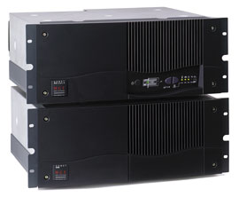
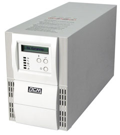
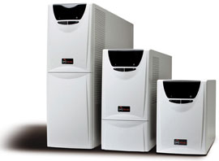

Андрей Ездаков
Ежегодно малый, средний и крупный бизнес в развитых странах несет многомиллиардные убытки из-за потерь или искажения информации, вызванных различными причинами, среди которых особенно выделяются нарушения энергоснабжения элементов корпоративных информационных систем. Поэтому любому предприятию с мало-мальски развитой информационной системой (ИС) приходится решать проблему защиты электропитания. Основное средство такой защиты - источник бесперебойного питания (ИБП), обеспечивающий надежное энергоснабжение всей системы. Если же покупать подобный ИБП слишком накладно, нужно снабдить такими устройствами хотя бы важнейшие части ИС: серверы, внешние дисковые массивы и коммуникационные устройства.
На отечественном рынке представлены многие мировые производители ИБП, предлагающие продукты различной мощности: от сотен вольт-ампер (такие устройства предназначены для защиты энергоснабжения отдельного компьютера или коммуникационного устройства) до сотен киловольт-ампер (эти ИБП способны обеспечить бесперебойную работу корпоративной сети или промышленного оборудования).
При выборе ИБП нужно разумно представлять потребности корпоративной ИС, выяснить ее наиболее уязвимые, в максимальной степени нуждающиеся в защите компоненты, а также здраво оценить перспективы ее развития. Исходя из трех этих факторов и с учетом финансовых возможностей любая компания может подобрать оптимальное для себя решение в соответствующем классе ИБП.
APC
Компания APC (http://www.apc.ru) предлагает потребителям устройства практически любого класса.
ИБП серии Back-UPS реализуют базовую защиту электропитания ПК и периферийного оборудования. Компактные устройства Back-UPS RS 500/1000/1500 были представлены на российском рынке в текущем году. Схема автоматической стабилизации напряжения позволяет им работать при низком качестве энергоснабжения. Эти ИБП выполнены в универсальном корпусе, который можно установить как вертикально, так и горизонтально, в виде подставки высотой 2U между компьютером и монитором. Устройства серии оснащаются батареями, которые пользователь может заменить самостоятельно, а также интеллектуальной схемой управления ими.
Модель Back-UPS RS 500 максимально эффективно использует аккумуляторную поддержку и совместима с генераторами на топливных элементах (включая портативные). Устройства RS 1000/1500 дольше работают от батареи, обеспечивая защиту электропитания, достаточную для двух компьютеров (с 21-дюйм мониторами) и нескольких периферийных устройств. Эти модели оснащены дополнительными розетками. Кроме того, RS 1500 (мощностью 1,5 кВ.А) может комплектоваться дополнительным батарейным блоком, позволяющим увеличить время автономной работы в 3 раза - до 360 мин.
В последнее время эта серия пополнилась рядом эргономичных и оптимальных по соотношению цена/качество продуктов, таких, как Back ES 350/500 и Back CS 350/500.
Линейка ИБП Smart-UPS (в напольном исполнении или для монтажа в стойку) позволяет эффективно управлять электропитанием серверов, хранилищ данных, сетевого и телекоммуникационного оборудования, а также информационных центров. Более мощные устройства этого семейства предназначены для реализации централизованного управления энергоснабжением групп серверов, кластеров, компьютерных залов и классов, а также центров обработки данных.
Серия Smart-UPS XL адаптирована для увеличения времени автономной работы с помощью установки дополнительных батарей.
On-line ИБП с двойным преобразованием Smart-UPS RT адаптированы для установки в стойки и шкафы. Имея номиналы мощности от 1 до 10 кВ.А, устройства этой серии в стандартной конфигурации отличаются высокой плотностью мощности по отношению к занимаемой высоте. Например, ИБП мощностью 5 кВ.А имеет в высоту 3U, а модель на 10 кВ.А - 6U. Новые ИБП Smart-UPS RT обеспечивают нулевое время переключения на батарейное питание и обратно.
Устройства серии Smart-UPS RT поставляются в комплекте с дополнительной батареей, которую пользователь может заменить самостоятельно. Кроме того, можно наращивать емкость батарей с помощью стандартных модулей. Эти ИБП также оснащены современным ПО PowerChute Business Edition. Для управления устройствами мощностью от 1 до 5 кВ.А служат дополнительные платы, устанавливаемые в Smart-Slot. ИБП Smart-UPS RT мощностью 5 и 10 кВ.А укомплектованы встроенной платой управления Web/SNMP.
Массив электропитания Symmetra ориентирован на организацию избыточного уровня масштабируемой защиты электропитания информационных центров, серверных комнат, суперЭВМ и других высокоэнергоемких объектов информационной инфраструктуры. В матричной архитектуре Symmetra Power Array блоки силовой электроники, батарей и процессоров избыточны и могут заменяться в горячем режиме. Эта архитектура позволяет обеспечить параллельную работу всех модулей, как основных, так и резервных; организовать резервирование по схеме N+1 и, таким образом, повысить уровень надежности вычислительного центра среднего масштаба.
Трехфазная система Silcon DP300E (мощностью от 10 до 480 кВ.А) предназначена для защиты широкого спектра электрооборудования: от суперЭВМ до ИС, производственных линий, систем электронного контроля и телекоммуникационного оборудования. Можно использовать до девяти параллельно установленных таких устройств. Организация взаимодействия между ними позволяет оптимально распределять нагрузку.
|  | Трехфазная система APC Silcon.
|
Решения Symmetra RT, а также Smart RT составляют часть новой открытой, адаптивной и интегрируемой архитектуры АРС InfraStruXure (ISX), которая помимо ИБП включает в себя шкафы нового поколения, системы распределения воздуха, ПДУ, аксессуары для управления электропитанием. Архитектура ISX предназначена для защиты центров обработки данных любого уровня.
APC предлагает три типа систем ISX, каждая из которых оснащена инструментом управления Enterprise Manager. Решение типа А предполагает установку от 1 до 10 стоек и состоит из стандартных готовых компонентов, которые можно самостоятельно выбрать из продуктов компании: Smart-UPS RM или Symmetra RM, блок распределения NetShelter VX, блок распределения питания (БРП), блок откачки воздуха (ARU) и кондиционер NetworkAIR PA.
При построении архитектуры типа B (от 10 до 100 стоек) можно использовать ИБП Symmetra PX, БРП мощностью 40 или 80 кВт, NetShelter VX и кондиционер NetworkAIR FM. Архитектура типа С (свыше 100 стоек) рассчитана на формирование системы электропитания крупной компании и оснащается ИБП Symmetra MW с БРП, NetShelter VX, кондиционером NetworkAIR FM, а также блоками откачки и распределения воздуха.
GE Digital Energy
Российская фирма "Абитех" (http://www.abitech.ru) поставляет ИБП компании GE Digital Energy (GE DE, http://www.gedigitalenergy.com). Эта компания производит полный спектр продуктов, включая как собственно ИБП (мощностью от 500 В.А до 4 МВ.А) линейно-интерактивной и on-line-архитектуры, так и ПО для защиты информационных систем и управления электропитанием через COM-порт и с помощью SNMP-адаптера.
Новое семейство линейно-интерактивных ИБП ML мощностью 350-1000 В.А, снабженное коммуникационным портом RS-232, обеспечивает электропитание ПК, кассовых аппаратов, факсов, модемов или коммуникационных приборов. Эти устройства работают с нагрузкой без перехода на батареи в широком диапазоне напряжения внешней сети - 140-300 В. Поддержка в моделях ML низкой температуры батарей увеличивает срок их службы.
ИБП семейства Match представляют собой недорогие интеллектуальные линейно-интерактивные устройства повышенной надежности, предназначенные для защиты серверов или активного сетевого оборудования. Они управляются микропроцессорами. Имеются модификации ИБП Match с увеличенным временем работы от батарей. Специальная серия с индексом RM предназначена для монтажа в стандартные 19-дюйм стойки.
Более мощные интеллектуальные on-line ИБП семейства NetPro мощностью от 600 В.А до 4 кВ.А относятся к категории VFI (Voltage & Frequency Independent - напряжение и частота независимы). Технология двойного преобразования в сочетании с байпасом обеспечивает NetPro высокую устойчивость к возмущениям в питающей энергосети. Эти устройства предназначены для защиты такой критичной нагрузки, как мощные серверы и кластеры, телекоммуникационное оборудование, ЛВС. Имеются модификации с увеличенным временем работы от батарей.
|  | On-line ИБП семейства NetPro компании GE DE.
|
ИБП NetPro оптимизированы для использования с дизель-генераторами. В этих устройствах допускается установка режима включения только после достижения достаточного ресурса автономного питания батарей и программируемое отключение менее критичных нагрузок в моменты перегрузки. Серия NetPro 19", помимо интерфейса RS-232, имеет порт SNMP и предназначена для защиты устройств, расположенных в 19-дюйм стойке.
Мощные интеллектуальные on-line ИБП LanPro компании GE DE представляют собой высокотехнологичные системы, обеспечивающие защиту электропитания критичной нагрузки широкого спектра. Они также относятся к категории VFI, и в них реализована технология RPA (Redundant Parallel Architecture - резервируемая параллельная архитектура).
Технология RPA позволяет параллельно соединять несколько ИБП (в данном случае до четырех, в общем случае до восьми) и обеспечивает динамические свойства системы защиты электропитания, основанные на перераспределении нагрузки. Она поддерживает резервирование всех критичных компонентов. С ее помощью можно расширять систему ИБП не только ради увеличения мощности, но и для повышения надежности питания критичных нагрузок. Модульность исполнения также упрощает модернизацию системы с целью наращивания ее мощности без отключения или перевода на байпас.
При использовании технологии RPA отпадает необходимость в установке внешних электронных устройств или переключателей для управления модулями ИБП в параллельной системе. Один из произвольно выбранных модулей в системе становится "ведущим". Одновременно обеспечивается доступ остальных устройств ко всем параметрам управления. В случае выхода из строя одного из ИБП нагрузка автоматически перераспределяется между работоспособными модулями. В случае выхода из строя ведущего устройства другой ИБП автоматически берет на себя его функции.
Помимо прочего, масштабируемость системы повышает ее рентабельность, а архитектура с равноправными узлами, где любой ИБП может быть ведущим, обеспечивает отсутствие нерезервируемых точек отказа. Поддержка функции последовательного мягкого старта параллельных устройств (при восстановлении питающей сети) позволяет избежать перегрузок питающего генератора, перегрева кабелей и срабатывания входных предохранителей, а также электрических возмущений, влияющих на другие нагрузки, которые имеют общий вход с параллельной системой.
В семействе LanPro реализована система усовершенствованного управления аккумуляторами Superior Battery Management (SBM), использование которой продлевает время жизни батарей. Специальный режим ECO позволяет автоматически экономить электроэнергию в условиях стабильной сети. Поэтому устройства семейства используются для защиты электропитания вычислительных центров и центров обработки данных; узлов связи; медицинского оборудования; систем вещания и спутниковой связи; систем безопасности и аварийного освещения; информационных систем финансовых учреждений.
В тех же областях применяются и еще более мощные ИБП компании GE DE, принадлежащие к семейству SitePro. Модельный ряд этого семейства включает on-line устройства мощностью от 10 до 500 кВ.А. На объектах, где требуется большая мощность и избыточное резервирование, благодаря архитектуре RPA можно параллельно установить до восьми таких аппаратов, что обеспечивает защиту нагрузки общей мощностью до 4 МВ.А.
Inelt
Для защиты энергоснабжения отдельных ПК и периферийного оборудования компания Inelt (http://www.inelt.ru) предлагает линейно-интерактивные ИБП Smart Station VX 325/500 с возможностью горизонтального и вертикального расположения на рабочем месте и диапазоном входного напряжения +-25% без переключения на батареи. Эти устройства обеспечивают также защиту телефонной линии через разъем RJ-11. В них имеется коммуникационный порт RS-232 и опционально устанавливается USB-адаптер.
Новая серия продуктов Smart Station RX 500S/600U поддерживает комплексное энергообеспечение рабочего места, т. е. электропитание разнообразной нагрузки вплоть до зарядного устройства для мобильного телефона. В таких моделях имеется шесть выходных евророзеток (3+3) вместо четырех в серии VX. ИБП серии RX600U оснащены USB-портом.
В семейство Smart Station Double 500/750/1000 входят более мощные модели линейно-интерактивных ИБП Inelt. Их можно использовать для защиты электропитания небольшой группы ПК или малого сервера. Микропроцессорное управление этими устройствами в сочетании с пятиступенчатым регулятором напряжения поддерживает широкий диапазон входного напряжения без перехода на батареи - до +-40%.
В моделях мощностью 500 и 750 В.А устанавливаются батареи повышенной емкости, обеспечивающие до 30 мин работы при отсутствии внешнего энергоснабжения. Аналогично предыдущей продуктовой линейке, Smart Station Double предоставляет возможность управления ИБП через коммуникационный порт RS-232 и опционально через USB-адаптер. Для бюджетных решений выпускается упрощенный вариант ИБП Smart Station STD с меньшим диапазоном входного напряжения без переключения на батареи.
Специальное семейство линейно-интерактивных ИБП компании Inelt - Smart Unit 600/1200 рассчитано на установку в стандартную 19-дюйм стойку. Эти устройства предназначены для защиты электропитания коммуникационного и компьютерного оборудования в стойке, поэтому они обладают сверхкомпактным корпусом высотой всего 1U. Используемый в этих ИБП тороидальный трансформатор обеспечивает высокий кпд работы, низкие тепловыделение и уровень помех.
Модели семейства линейно-интерактивных ИБП Intelligent 500/800/1100/1400 разумно применять для энергозащиты отдельных серверов, групп рабочих станций, офисной АТС и другого критичного оборудования. Эти устройства поддерживают широкий диапазон входного напряжения - от +-20 до +-30% (точное значение задается пользователем) без переключения на батареи. Во всех моделях реализована принудительная вентиляция и имеется возможность замены батарей в горячем режиме без отключения нагрузки.
|  | Линейно-интерактивные ИБП Inelt Intelligent.
|
Кроме фильтра с разъемами RJ-11 для защиты телефонной линии, в ИБП Intelligent имеется фильтр с разъемами RJ-45 для защиты компьютерной сети. Помимо индикации режимов работы регулятора напряжения на контрольной панели есть индикация уровня заряда батарей и мощности подключенной нагрузки. Стандартные возможности управления через коммуникационный порт RS-232 могут быть расширены путем установки SNMP-адаптера.
Специальная серия ИБП Intelligent 500RM/800RM/1100RM/1400RM предназначена для защиты оборудования в стандартной 19-дюйм монтажной стойке. Для принудительной вентиляции этих устройств используется сразу два вентилятора.
Более мощные модели семейства Intelligent - 2200RT/3000RT могут использоваться для защиты электропитания мощного сервера, группы серверов, массивов данных или серверных комнат. Они собираются в универсальный корпус типа Rack/Tower и поставляются с набором аксессуаров как для монтажа в 19-дюйм стойку, так и для вертикальной установки. В этих устройствах, оснащенных восемью розетками, поддерживается полный функционал семейства Intelligent.
Решение для защиты ответственной нагрузки, которой требуется длительная автономная работа (АТС, серверы, промышленное и телекоммуникационное оборудование), в том числе установленного в 19-дюйм стойке, - серия ИБП Intelligent 1000LT/2200RTLT/3000RTLT. Эти устройства по характеристикам аналогичны соответствующим моделям без индекса LT, но не имеют встроенных батарей. Они используются с внешними батарейными комплектами емкостью до 250 А.ч и напряжением 24 В для Intelligent 1000LT, 48 В - для остальных моделей (свинцово-кислотные необслуживаемые батареи различных производителей). Время автономной работы достигает 10 ч при 100%-ной нагрузке. Такой режим реализуется благодаря специальному инвертору, модифицированному для многочасовой автономной работы. Он же поддерживает ток заряда до 10 А.
Семейство on-line ИБП с двойным преобразованием напряжения - Monolith 1000/2000/3000 обеспечивает защиту энергоснабжения групп серверов, АТС, телекоммуникационного и иного оборудования, требовательного к качеству электропитания. В них используется инвертор на IGBT-транзисторах с широтно-импульсной модуляцией и корректор входного коэффициента мощности. Помимо коммуникационного порта RS-232 для управления устройствами может устанавливаться внешний SNMP-адаптер.
Модели Monolith с индексом LT не содержат встроенных батарей и предназначены для поддержки нагрузки при долговременном (до 14 ч) отключении внешнего электропитания. Устройства с индексом RM монтируются в 19-дюйм стойку. Модели с индексом RMLT объединяют эти свойства.
Особо мощные on-line ИБП данного семейства - Monolith T6000/T6000LT/T10000/T10000LT обеспечивают полную электрозащиту серверной комнаты, АТС, техники среднего офиса, телекоммуникационного и промышленного оборудования.
Liebert-Hiross
Компания Liebert-Hiross (http://www.liebert-hiross.ru) предлагает широкий спектр одно- и трехфазных on-line ИБП (ранее выпускавшихся под торговой маркой Emerson Computer Power) мощностью от 300 Вт до нескольких мегаватт.
Для защиты отдельных компьютеров, периферийного оборудования и коммуникационных устройств предназначены модели ИБП двух семейств off-line - PowerSure Personal и PowerSure ProActive. В первое входят три модели с выходной мощностью 450, 700 и 1250 В.А, во второе - четыре с мощностью 350/500/650/1000 В.А. В устройствах семейства PowerSure ProActive имеется автотрансформатор.
Защиту более ответственной нагрузки можно доверить линейно-интерактивным ИБП семейства PowerSure InterActive, модели которого поддерживают номиналы выходной мощности 700/1000/1400/2200 В.А. Имеются варианты таких устройств для установки в 19-дюйм стойку.
Семейство ИБП on-line компании Liebert-Hiross под названием UPStation GXT2U объединяет модели с выходной мощностью в широком диапазоне от 700 В.А до 10 кВ.А. Такие устройства с двойным преобразованием входного напряжения уже можно использовать для защиты серверных комнат, телекоммуникационного, медицинского и другого критичного оборудования. Эти ИБП поддерживают входное напряжение в широком интервале (119-280 В) без переключения на аккумуляторы. Они могут работать с дополнительными внешними батареями. Устройства используются в настольной (напольной) конфигурации либо монтируются в стойку, высота их составляет 2U.
В моделях данной серии значительно расширены возможности контроля и управления работой ИБП. UPStation GXT2U имеет внутренний разъем для установки SNMP-платы. С помощью специального ПО Multilink, разработанного компанией Liebert-Hiross, пользователи могут самостоятельно конфигурировать выходные параметры системы, разрешать или запрещать автоматический перезапуск и настраивать аварийные сигналы. Устройства этого семейства поддерживают энергоснабжение нагрузки в широком диапазоне напряжения (119-280 В) и частоты (40-70 Гц) без переключения на батареи. Предусмотрена и возможность быстрой замены аккумуляторов.
Наличие в моделях семейства UPStation GXT2U внутреннего автоматического и внешнего ручного байпаса гарантирует непрерывность подачи питания к критичной нагрузке при возникновении проблем с подачей питания или при проведении технического обслуживания.
В семейство модульных on-line устройств Nfinity входят модели с мощностью 4/8/12/16 кВ.А для однофазных систем и 4/8/12/16/20 кВ.А (для систем с трехфазным входом и однофазным выходом). Особенность этих ИБП - возможность их трехфазного подключения по входу при однофазном выходе на нагрузку. В них также предусмотрено резервирование силовых и батарейных модулей в варианте N+х и имеется резервный модуль управления. Установка внешних батарей продлевает время автономной работы аппарата до 8 ч и более. Температурная компенсация зарядного тока значительно удлиняет срок службы аккумуляторов.
|  | Модульный ИБП семейства Nfinity.
|
Еще одна важная особенность - "интеллектуальность" батарейных модулей, которые самостоятельно отключаются от общей шины при обнаружении неисправности, что позволяет избежать так называемых каскадных отключений и не нарушает работоспособность всей системы. При установке в Nfinity новых модулей они проводят самодиагностику перед тем, как войти в рабочий режим. Предусмотрена и возможность замены модулей в горячем режиме без отключения нагрузки.
Устройства семейства Nfinity способны защищать электропитание критически важных нагрузок, таких, как серверы и кластеры; центры обработки и хранилища данных; телекоммуникационное, контрольно-измерительное и медицинское оборудование. Для этого ИБП данного семейства можно объединять в параллельные конфигурации с избыточностью по схеме N+x. Для уменьшения нагрузок на аккумуляторы нижний предел диапазона входного напряжения, при котором ИБП поддерживает питание нагрузки без подключения батарей, можно снизить до 110 В. Кроме того, устройство способно выдерживать 110% номинальной нагрузки в течение длительного периода времени.
Аналогичными характеристиками обладают и все модели on-line ИБП семейства Series Hinet (с трехфазным входом и трехфазным же выходом либо с трехфазным входом и однофазным выходом), имеющие выходную мощность 10, 15, 20 и 30 кВ.А. Они также ориентированы на защиту критически важного оборудования.
Классическая полностью трехфазная конфигурация (трехфазные вход и выход) реализована в моделях ИБП Liebert-Hiross семейства Series 7200 с мощностями 30/40/50 кВ.А. Возможно совместное подключение двух таких устройств по схеме "1+1" для организации полного резервирования или наращивания мощности.
Самые мощные ИБП компании - семейство Hipulse. Его многочисленные модели имеют мощность от 80 до 800 кВ.А. До шести таких устройств можно объединять в параллельную или модульную систему для резервирования или увеличения выходной мощности. Специальный режим работы ИБП Hipulse делает их совместимыми с дизель-генератором.
MGE
Семейство ИБП Pulsar Ellipse французской компании MGE (http://www.mgeups.ru) построено по технологии off-line и предназначено для защиты электропитания отдельных ИТ-устройств или всего электрооборудования небольшого офиса. Пять моделей семейства имеют выходную мощность 300/500/650/800/1200 В.А. Во всех этих устройствах реализована улучшенная схема защиты от скачков напряжения, аналогичная схеме защиты от грозовых разрядов, применяемой в сетевых фильтрах компании Pulsar CL5. Благодаря этому уровень рассеивания тепловой энергии чрезвычайно высок (575 Дж).
Устройства семейства Pulsar Ellipse отличаются стильным дизайном и могут устанавливаться как в вертикальном, так и в горизонтальном положении. В них реализована функция автоматического тестирования батарей. Функция Powershare в старшей модели позволяет программировать время работы групп розеток от батарей, управлять мощностью только тех из них, через которые поддерживается электропитание наиболее важного оборудования. Устройства семейства могут оснащаться выходными розетками разного типа.
Специальное ПО Solution Pac, входящее в комплект поставки, обеспечивает мониторинг статуса ИБП и безопасный режим отключения системы. Универсальный порт USBS совмещает в себе USB-порт и RS-232. Защита линии передачи данных и телефонных линий осуществляется через разъемы RJ-11 и RJ-45.
Пять моделей линейно-интерактивного семейства Pulsar Ellipse premium обладают такими же выходными мощностями и имеют те же назначение и функциональность, что и Pulsar Ellipse. Наличие бустера позволяет этим устройствам поддерживать работу нагрузки без переключения на батареи в диапазоне входного напряжения от 150 до 264 В.
Семейство линейно-интерактивных ИБП Pulsar Evolution представлено шестью моделями с номиналами мощности 500/700/1100/1500/2200/3000 В.А. Есть варианты корпусов типа Tower (напольный или настольный) и Rack - для размещения в стойке. У этого семейства еще шире допустимый диапазон внешнего напряжения - он составляет 150-295 В. Для управления в Pulsar Evolution встроены два порта - USB и RS-232; имеется и SNMP-плата для организации удаленного доступа.
Аппараты семейства Pulsar Evolution предназначены для защиты ответственной нагрузки: серверов, коммуникационного и сетевого оборудования, групп ПК. Для повышения надежности работы ИБП в них установлен изолирующий трансформатор, предусмотрены замена батарей в горячем режиме, подключение дополнительных аккумуляторных модулей и режим быстрой перезарядки батарей (до 80% за 2 ч). Кроме того, для резервирования защиты электропитания такие ИБП можно попарно объединять через специальный модуль Pulsar STS.
В моделях on-line ИБП семейств Pulsar EXtreme и Comet EXtreme реализован модульный принцип построения и схема двойного преобразования. В обоих семействах насчитывается по четыре модели мощностью соответственно 1,5/2/2,5/3 кВ.А в Pulsar и 4,5/6/9/12 кВ.А в Comet. Устройства этих семейств, дополняющих друг друга, рассчитаны на высоконадежную избыточную защиту ответственной нагрузки, такой, как серверы, серверные комнаты, хранилища данных, коммуникационное оборудование. Время их автономной работы может составлять от 15 мин до нескольких часов в зависимости от количества подключенных батарейных модулей.
|  | Модульный on-line ИБП семейства Comet.
|
Модели этих семейств выпускаются как в напольном, так и в стоечном варианте. Они поддерживают очень широкий диапазон входного напряжения без переключения на аккумуляторное электропитание - от 84 до 276 В. Помимо отдельного коммуникационного слота (в Comet - двух) для подключения плат USB, SNMP, Jbus или релейных контактов, в ИБП типа EXtreme имеется специальный модуль расширения с тремя разъемами, позволяющий собирать данные от систем резервных ИБП. Кроме того, можно получать информацию о состоянии устройства через выносную ЖК-панель UPScontrol.
MGE также выпускает серию специальных компактных ИБП семейства Pulsar EXtreme с индексом "c". Эти on-line устройства с выходными параметрами 700/1000/1500 В.А обладают всеми свойствами основного семейства и предназначены для защиты компьютерных сетей и другой важной нагрузки.
Самые мощные трехфазные on-line ИБП компании MGE, семейство Galaxy, основаны на принципе двойного преобразования и имеют широкий диапазон входного напряжения, с нижним пределом до -37%. В новую серию таких устройств, названную Galaxy 3000, входят четыре модели с номиналами выходной мощности 10, 15, 20 и 30 кВ.А. Такие аппараты предназначены для защиты энергоснабжения центров обработки данных, комплексов медицинского, промышленного и коммуникационного оборудования и других критически важных объектов. В них используются компактные IGBT-выпрямители и IGBT-инверторы, что, в частности, уменьшает потребление энергии сети на 20%. Компактный дизайн электрических компонентов потребовал жидкостного охлаждения как наиболее эффективного средства отвода тепла.
Модели семейства полностью совместимы с дизель-генераторами. Благодаря коррекции коэффициент мощности THDI составляет менее 3% на входе и выходе без использования фильтров. Интеллектуальная система мониторинга батарей продлевает срок их службы, а наличие четырех коммуникационных слотов расширяет возможности управления устройствами серии.
Кроме 3000-й серии, в семейство входят еще более мощные ИБП Galaxy PW с номиналом от 40 до 200 кВ.А и модели, обозначаемые просто Galaxy, мощностью 250-800 кВ.А. Таким образом, семейство Galaxy покрывает практически все возможные потребности заказчиков. Оборудование имеет высокий кпд - до 94%, большую перегрузочную способность и обеспечивает высокое качество выходного напряжения при питании нелинейных нагрузок с нестабильными характеристиками. Параллельное подключение позволяет подавать на нагрузку до 4800 кВ.А мощности (шесть блоков ИБП по 800 кВ.А).
PowerCom
Компания PowerCom предлагает корпоративным пользователям четыре линейки ИБП: Smart King, Vanguard, Ultimate, ONL 33.
Линейно-интерактивные устройства Smart King выпускаются в семи вариантах мощности поддерживаемой нагрузки: 600/800/1000/1250/1500/2000/3000 В.А. Эти ИБП предназначены для защиты серверов, рабочих станций, а также групп ПК и телекоммуникационного оборудования небольшой мощности.
ИБП семейства Smart King устраняют значительную часть высоковольтных импульсных помех. Поступающие на вход электромагнитные и радиочастотные помехи фильтруются встроенным EMI-фильтром. При повышении и понижении входного напряжения в пределах допустимого устройства Smart King компенсируют недостаток или избыток через соответственно повышающую и понижающую обмотки трансформатора AVR (Automatic Voltage Regulator).
Синусоидальная форма выходного сигнала устройств позволяет подключать к ним оборудование не только с импульсными блоками питания, но и с трансформаторными. Цифровое микропроцессорное управление в Smart King реализует технологию продления жизни батарей ABM (Advanced Battery Management), вдвое увеличивающую срок службы аккумуляторных батарей, и обеспечивает совместимость аппаратов с SNMP-платами и другими интеллектуальными адаптерами (в устройствах предусмотрен слот для установки коммуникационных плат).
Во всех моделях серии предусмотрен режим сбережения электроэнергии. ИБП Smart King переходит в него, если нагрузка перестает потреблять электроэнергию. В них также реализована возможность замены батарей в горячем режиме.
Лицевая панель моделей Smart King с индексом LCD оснащена ЖК-дисплеем, на котором отражаются основные параметры работы устройства, в частности, температура ИБП. Модели с индексом XL оснащены батареями, обеспечивающими до 8 ч автономной работы. Модели с индексом RM предназначены для монтажа в стойку. Все поставляющиеся в Россию с 2003 г. ИБП Smart King типа RM и XL тоже имеют ЖК-дисплей.
Выпускаемые PowerCom модели интеллектуальных on-line ИБП Vanguard с нулевым временем перехода на батареи и обратно имеют мощности 700/1000/1500/2000/3000 В.А. Они предназначены для качественной защиты питания серверов, рабочих станций, измерительных приборов, приборов наблюдения, контроля и автоматики, медицинской аппаратуры, а также групп ПК, серверов и телекоммуникационного оборудования средней мощности.
|  | On-line ИБП PowerCom семейства Vanguard.
|
Диапазон входных напряжений, в пределах которого эти устройства поддерживают энергоснабжение нагрузки без переключения на батареи, составляет 160-285 В. Высоковольтные импульсные искажения фильтруются входным выпрямительным каскадом, а электромагнитные и радиочастотные помехи - встроенным EMI-фильтром. Кроме того, ИБП семейства Vanguard контролируют нормальное значение частоты питания, исправляют искажение формы входного напряжения и блокируют переходные коммутационные процессы.
Все модели семейства оснащены ЖК-дисплеями с меню на русском и английском языках и коммуникационными портами USB и RS-232. В них реализованы возможность сегментации нагрузок, раздельное управление выходными сегментами, функция аварийного отключения и адаптируемое время батарейной поддержки с безопасным для жизни напряжением батарейных блоков (до 40 В постоянного тока). ИБП Vanguard выпускаются также в модификациях RM для установки в 19-дюйм стойки.
On-line ИБП Ultimate с минимальной стоимостью кондиционированной электроэнергии выпускаются мощностью 6/8/10/12/15 кВ.А. Они ориентированы на защиту энергоснабжения групп компьютеров, рабочих станций и серверов или серверных комнат; стоек телекоммуникационного оборудования; медицинской аппаратуры в масштабах учреждения; комплексов измерительного оборудования, приборов автоматики и т. п.
Коррекция коэффициента мощности делает ИБП семейства Ultimate почти линейной нагрузкой. В результате увеличивается полезная мощность, отдаваемая нагрузке, и уменьшается выброс мощности в первичные цепи. Стандартный встроенный THD-фильтр снижает коэффициент нелинейных искажений до 3%. ЖК-дисплей позволяет контролировать работу устройства в реальном масштабе времени. Для установки в стойку выпускаются модификации с индексом RM.
Самые мощные устройства компании - ONL 33 представляют собой on-line ИБП с трехфазными входом и выходом. Модели имеют мощность 10/15/22/30/45/60 кВ.А. Они предназначены для защиты энергоснабжения серверных комнат; центров обработки данных; финансовых центров; залов с телекоммуникационным оборудованием; комплексов производственного оборудования (автоматики, КИП, САПР и т. д.); транспортных узлов; военного оборудования и других устройств, требовательных к качеству электропитания.
Помимо всех функциональных возможностей, реализованных в предыдущих продуктовых семействах PowerCom, в ИБП ONL 33 поддерживается полная самодиагностика устройства и ведение внутреннего журнала событий, согласованная работа с дизель-генераторными установками, проведение теста батарей без отключения входных цепей. Кроме того, в этих ИБП возможно управление током заряда батарей из меню ЖК-панели и установка удаленной панели управления. В них также имеется встроенный выходной изолирующий трансформатор.
Riello
Российская дистрибьюторская компания Erimex (http://www.erimex.ru) предлагает пользователям ИБП, производимые итальянской компанией Riello UPS Manufacturing (http://www.riello-ups.com, http://www.riello-ups.ru).
|  | ИБП марки Riello.
|
ИБП семейства Personal Dialog Pro предназначены для защиты компьютеров, периферийных и небольших коммуникационных устройств. Их современный оригинальный дизайн разработан студией Pininfarina, есть пять вариантов расцветки корпуса. Сейчас покупателям предлагаются две модели этого семейства: Personal Dialog Pro 45 мощностью 450 В.А и Personal Dialog Pro 65 мощностью 650 В.А.
Обе модели Personal Dialog Pro имеют два отдельно контролируемых микропроцессором сегмента выходных разъемов, что позволяет заблаговременно запрограммировать время отключения менее приоритетной нагрузки (например, сканера) при переходе ИБП на режим работы от аккумуляторов, сохраняя энергию аккумуляторных батарей для более приоритетной нагрузки. Функция "спящего режима" значительно увеличивает ресурс работы батарей за счет автоматического отключения аппарата при длительном отсутствии нагрузки на выходе.
Более мощные ИБП семейства Net Dialog (модели Net Dialog 100 мощностью 1 кВ.А и Net Dialog 150 мощностью 1,5 кВ.А) имеют те же функциональные возможности. Устройства этого семейства построены по линейно-интерактивной технологии и представляют собой систему защиты электропитания для серверов, небольших групп ПК и коммуникационного оборудования. Автоматическая корректировка напряжения (AVR) позволяет ИБП Net Dialog поддерживать энергоснабжение нагрузки без переключения на батареи в диапазоне 230 В +15/-22%.
Контроль за работой устройств семейства Net Dialog осуществляется как через стандартный разъем RS-232, так и в сигнальном режиме. Для защиты телефонной линии и компьютерной сети от импульсных помех на задней панели устройств имеются разъемы RJ-45 и RJ-11.
Устройства семейства Dialog Active также относятся к классу линейно-интерактивных ИБП. Это семейство включает 5 моделей: DA 50/75/100/150/200 мощностью соответственно 500/750/1000/1500/2000 В.А. Такие устройства имеют широкий спектр возможного применения, начиная от защиты электропитания отдельного ПК и заканчивая поддержкой энергоснабжения серверов, коммуникационной техники или всего оборудования небольшого офиса.
Диапазон входного напряжения, при котором ИБП семейства Dialog Active поддерживают работу нагрузки без перехода на батареи, значительно шире, чем у предыдущего семейства, и составляет 230 B +21/-25%.
Защита телефонных линий и компьютерной сети в этих устройствах также осуществляется через порты RJ-45/RJ-11. Благодаря наличию у моделей семейства Dialog Active стандартного разъема RS-232 и USB-порта достигается универсальность подключения компьютерной техники к ИБП. Тип интерфейса выбирается и активизируется с помощью Dip-переключателей на лицевой панели ИБП. В старших моделях семейства имеется также слот расширения SNMP для подключения соответствующей платы.
У моделей семейства Dialog Active при работе от аккумуляторных батарей выходное напряжение имеет форму синусоиды, как и в более дорогих on-line ИБП, использующих технологию двойного преобразования.